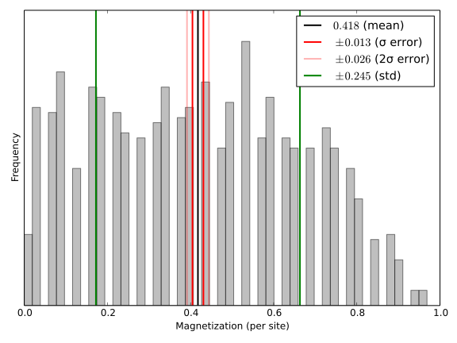
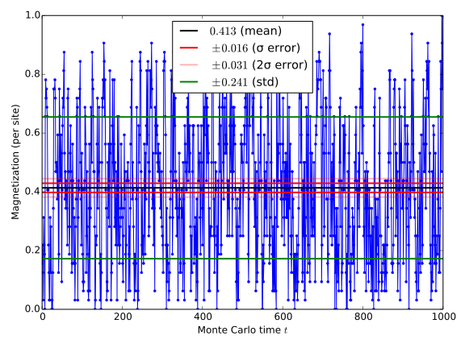

Manual
Installation / Updating
To install the package execute the following command in the REPL:
Pkg.clone("https://github.com/crstnbr/MonteCarlo.jl")To obtain the latest version of the package just do Pkg.update() or specifically Pkg.update("MonteCarlo").
Example
This is a simple demontration of how to perform a classical Monte Carlo simulation of the 2D Ising model:
using MonteCarlo, MonteCarloObservable
m = IsingModel(dims=2, L=8, β=0.35);
mc = MC(m);
run!(mc, sweeps=1000, thermalization=1000, verbose=false);
observables(m) # what observables do exist for that model?
m = mc.obs["m"] # take observable
name(m) # ==== "Magnetization (per site)"
typeof(m) # === MonteCarloObservable
mean(m) # estimate for the mean
std(m) # one-sigma error of mean from automated binning analysis
hist(m) # histogram of time series
plot(m) # plot time series
